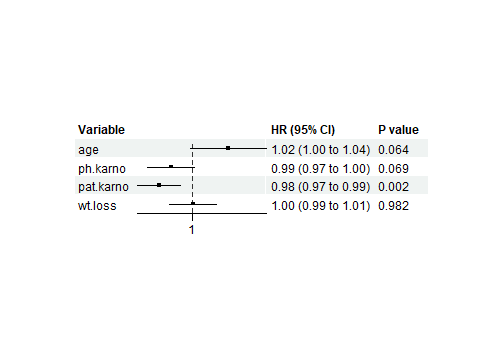
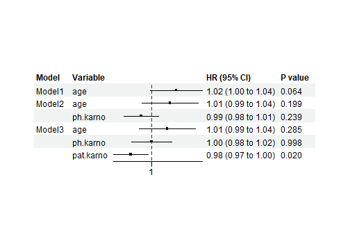
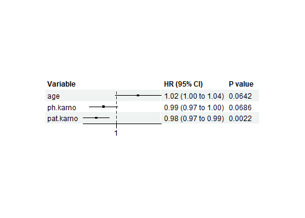
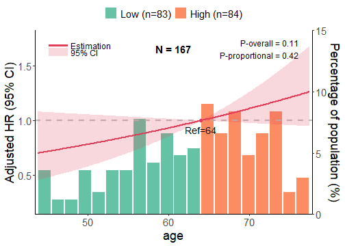
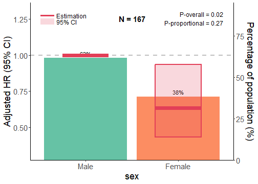
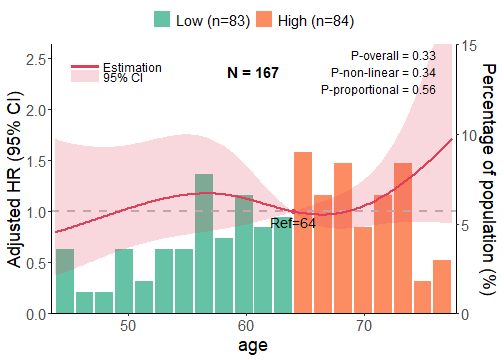
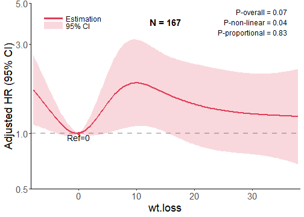
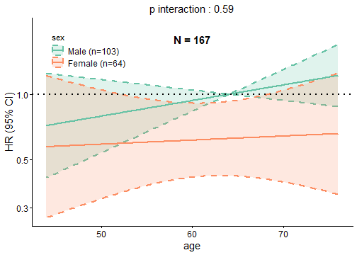
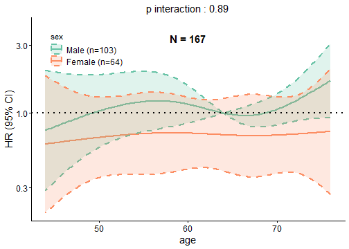
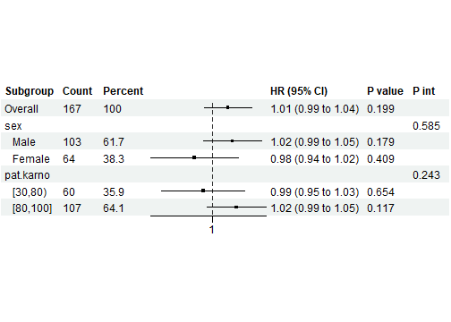

写在前面
回归分析是临床研究中最核心的统计方法之一。无论是探索预后因素（Cox 回归）、研究危险因素（Logistic 回归），还是分析连续结局（线性回归），你都需要经历一系列繁琐的步骤：变量筛选、变换尝试、多模型比较、结果可视化……
clinpubr提供了一套统一的回归分析接口，覆盖 Cox 比例风险模型、Logistic 回归和线性回归，并内置了发表级别的可视化功能。本文将通过完整的实战案例，带你掌握以下核心技能：
- 自动化变量扫描与变换筛选
- 多模型规格的结果汇总表
- 发表级森林图
- RCS 曲线与预测变量效应图
- 交互作用分析与亚组森林图
适用场景：预后研究、危险因素分析、预测模型开发等。
clinpubr
的回归分析函数采用统一接口，会根据 y 和
time 参数的设置自动推断模型类型：
y 类型 |
time 参数 |
推断模型 |
|---|---|---|
| 二分类（0/1） | 提供 | Cox 比例风险模型 |
| 二分类（0/1） | 不提供 | Logistic 回归 |
| 连续变量 | — | 线性回归 |
这意味着你只需要更换数据，而无需记忆不同的函数名。
我们使用 NCCTG 肺癌数据集（228 例晚期肺癌患者）：
data(cancer, package = "survival")
cancer$dead <- cancer$status == 2
cancer_clean <- cancer %>%
mutate(
sex = factor(sex, labels = c("Male", "Female"))
) %>%
na.omit()
knitr::kable(data.frame(
Rows = nrow(cancer_clean),
Columns = ncol(cancer_clean),
Description = "用于分析的完整病例"
), caption = "分析数据集概览")| Rows | Columns | Description |
|---|---|---|
| 167 | 11 | 用于分析的完整病例 |
| inst | time | status | age | sex | ph.ecog | ph.karno | pat.karno | meal.cal | wt.loss | dead | |
|---|---|---|---|---|---|---|---|---|---|---|---|
| 2 | 3 | 455 | 2 | 68 | Male | 0 | 90 | 90 | 1225 | 15 | TRUE |
| 4 | 5 | 210 | 2 | 57 | Male | 1 | 90 | 60 | 1150 | 11 | TRUE |
| 6 | 12 | 1022 | 1 | 74 | Male | 1 | 50 | 80 | 513 | 0 | FALSE |
| 7 | 7 | 310 | 2 | 68 | Female | 2 | 70 | 60 | 384 | 10 | TRUE |
| 8 | 11 | 361 | 2 | 71 | Female | 2 | 60 | 80 | 538 | 1 | TRUE |
| 9 | 1 | 218 | 2 | 53 | Male | 1 | 70 | 80 | 825 | 16 | TRUE |
regression_scan()
可以自动对每个预测变量进行多种变换的测试：
cox_scan <- regression_scan(
data = cancer_clean,
y = "status",
time = "time",
# 设置 predictors = NULL 可扫描所有可用变量
# predictors = NULL,
predictors = c("age", "sex", "ph.karno", "pat.karno", "wt.loss", "meal.cal"),
covars = NULL,
save_table = FALSE
)
knitr::kable(cox_scan, caption = "Cox 回归扫描结果")| predictor | nvalid | original.HR | original.pval | original.padj | logarithm.HR | logarithm.pval | logarithm.padj | categorized.HR | categorized.pval | categorized.padj | rcs.overall.pval | rcs.overall.padj | rcs.nonlinear.pval | rcs.nonlinear.padj | best.var.trans | |
|---|---|---|---|---|---|---|---|---|---|---|---|---|---|---|---|---|
| 4 | pat.karno | 167 | 0.9812708 | 0.0021995 | 0.0131971 | 0.2933451 | 0.0024286 | 0.0097142 | 0.5831016 | 0.0038615 | 0.0193076 | 0.0210379 | 0.0698049 | 0.9680713 | 0.9680713 | original |
| 2 | sex | 167 | 0.6192558 | 0.0147907 | 0.0443721 | NA | NA | NA | NA | NA | NA | NA | NA | NA | NA | original |
| 1 | age | 167 | 1.0200874 | 0.0641959 | 0.1029532 | 3.2622315 | 0.0688278 | 0.1275780 | 1.3335186 | 0.1177009 | 0.1471261 | 0.1464013 | 0.1830016 | 0.4447903 | 0.7413172 | original |
| 3 | ph.karno | 167 | 0.9878729 | 0.0686354 | 0.1029532 | 0.4378243 | 0.0956835 | 0.1275780 | 0.6274233 | 0.0184766 | 0.0461915 | 0.0279220 | 0.0698049 | 0.0803601 | 0.2009002 | categorized |
| 6 | meal.cal | 167 | 0.9998804 | 0.6209701 | 0.7451641 | 0.8967025 | 0.5548170 | 0.5548170 | 0.8640874 | 0.4291805 | 0.4291805 | 0.7222351 | 0.7222351 | 0.6013624 | 0.7517029 | categorized |
| 5 | wt.loss | 167 | 1.0001532 | 0.9817372 | 0.9817372 | NA | NA | NA | 1.4330287 | 0.0527764 | 0.0879607 | 0.1053526 | 0.1755877 | 0.0466637 | 0.2009002 | rcs.nonlinear |
扫描结果报告了效应量、P 值、校正后 P 值（默认 BH 校正）以及最佳变换方式。
logistic_scan <- regression_scan(
data = cancer_clean,
y = "dead",
predictors = c("age", "sex", "ph.karno", "pat.karno", "wt.loss"),
covars = NULL,
save_table = FALSE
)
knitr::kable(logistic_scan, caption = "Logistic 回归扫描结果")| predictor | nvalid | original.OR | original.pval | original.padj | logarithm.OR | logarithm.pval | logarithm.padj | categorized.OR | categorized.pval | categorized.padj | rcs.overall.pval | rcs.overall.padj | rcs.nonlinear.pval | rcs.nonlinear.padj | best.var.trans | |
|---|---|---|---|---|---|---|---|---|---|---|---|---|---|---|---|---|
| 2 | sex | 167 | 0.3742964 | 0.0053682 | 0.0268408 | NA | NA | NA | NA | NA | NA | NA | NA | NA | NA | original |
| 4 | pat.karno | 167 | 0.9701901 | 0.0184097 | 0.0460243 | 0.1480629 | 0.0465029 | 0.0465029 | 0.4427438 | 0.0373640 | 0.0498187 | 0.0689533 | 0.1457501 | 0.5271516 | 0.5271516 | original |
| 3 | ph.karno | 167 | 0.9703678 | 0.0396626 | 0.0528173 | 0.0984975 | 0.0461388 | 0.0465029 | 0.3157895 | 0.0161386 | 0.0475296 | 0.0995735 | 0.1457501 | 0.2382474 | 0.4764948 | categorized |
| 1 | age | 167 | 1.0389903 | 0.0422538 | 0.0528173 | 10.2713218 | 0.0335189 | 0.0465029 | 1.7416268 | 0.1120568 | 0.1120568 | 0.1457501 | 0.1457501 | 0.5010354 | 0.5271516 | logarithm |
| 5 | wt.loss | 167 | 1.0084347 | 0.5300552 | 0.5300552 | NA | NA | NA | 2.2308546 | 0.0237648 | 0.0475296 | 0.1176075 | 0.1457501 | 0.0679239 | 0.2716957 | categorized |
在临床论文中，通常需要展示多种模型规格（粗模型、部分调整、完全调整）以说明混杂因素对估计关联的影响。
cox_results <- regression_basic_results(
data = cancer_clean,
x = "age",
y = "status",
time = "time",
model_covs = list(
Crude = c(),
Model1 = c("sex"),
Model2 = c("sex", "ph.karno", "pat.karno")
),
pers = c(1, 5, 10),
save_output = FALSE
)
knitr::kable(cox_results$table, caption = "年龄的 Cox 回归结果")| Terms | Count | Crude | Crude | Model1 | Model1 | Model2 | Model2 |
|---|---|---|---|---|---|---|---|
| age (All) | 167 | HR | P | HR | P | HR | P |
| Continuous | NA | 1.02(1.00,1.04) | 0.064 | 1.02(1.00,1.04) | 0.109 | 1.01(0.99,1.03) | 0.352 |
| Continuous, per 1 | NA | 1.02(1.00,1.04) | 0.064 | 1.02(1.00,1.04) | 0.109 | 1.01(0.99,1.03) | 0.352 |
| Continuous, per 5 | NA | 1.10(0.99,1.23) | 0.064 | 1.09(0.98,1.21) | 0.109 | 1.06(0.94,1.18) | 0.352 |
| Continuous, per 10 | NA | 1.22(0.99,1.51) | 0.064 | 1.19(0.96,1.47) | 0.109 | 1.11(0.89,1.40) | 0.352 |
| Continuous, per 1 SD | NA | 1.20(0.99,1.46) | 0.064 | 1.17(0.97,1.43) | 0.109 | 1.10(0.90,1.36) | 0.352 |
| Continuous, logarithm | NA | 3.26(0.91,11.66) | 0.069 | 2.79(0.78,10.06) | 0.116 | 1.89(0.49,7.34) | 0.359 |
| Grouped by Quartiles | NA | NA | NA | NA | NA | NA | NA |
| Q1 | 41 | 1 (Reference) | NA | 1 (Reference) | NA | 1 (Reference) | NA |
| Q2 | 42 | 0.79(0.46,1.34) | 0.373 | 0.72(0.42,1.23) | 0.228 | 0.71(0.42,1.22) | 0.215 |
| Q3 | 40 | 1.03(0.61,1.73) | 0.905 | 0.98(0.58,1.65) | 0.941 | 0.87(0.51,1.49) | 0.613 |
| Q4 | 44 | 1.34(0.81,2.20) | 0.256 | 1.23(0.75,2.04) | 0.414 | 1.08(0.64,1.83) | 0.775 |
| P for trend | NA | NA | 0.144 | NA | 0.208 | NA | 0.561 |
| Grouped by Median Value | NA | NA | NA | NA | NA | NA | NA |
| Low | 83 | 1 (Reference) | NA | 1 (Reference) | NA | 1 (Reference) | NA |
| High | 84 | 1.33(0.93,1.91) | 0.118 | 1.31(0.92,1.88) | 0.138 | 1.16(0.79,1.71) | 0.437 |
logistic_results <- regression_basic_results(
data = cancer_clean,
x = "ph.karno",
y = "dead",
model_covs = list(
Crude = c(),
Adjusted = c("age", "sex")
),
factor_breaks = c(80),
factor_labels = c("<80", ">=80"),
save_output = FALSE
)
knitr::kable(logistic_results$table, caption = "体能状态的 Logistic 回归结果")| Terms | Count | Crude | Crude | Adjusted | Adjusted |
|---|---|---|---|---|---|
| ph.karno (All) | 167 | OR | P | OR | P |
| Continuous | NA | 0.97(0.94,1.00) | 0.040 | 0.97(0.94,1.00) | 0.085 |
| Continuous, per 0.1 | NA | 1.00(0.99,1.00) | 0.040 | 1.00(0.99,1.00) | 0.085 |
| Continuous, per 10 | NA | 0.74(0.55,0.98) | 0.040 | 0.76(0.55,1.03) | 0.085 |
| Continuous, per 100 | NA | 0.05(0.003,0.80) | 0.040 | 0.07(0.003,1.36) | 0.085 |
| Continuous, per 1 SD | NA | 0.68(0.47,0.97) | 0.040 | 0.71(0.47,1.04) | 0.085 |
| Continuous, logarithm | NA | 0.10(0.009,0.87) | 0.046 | 0.12(0.009,1.34) | 0.097 |
| Grouped by Quartiles | NA | NA | NA | NA | NA |
| Q1 | 20 | 1 (Reference) | NA | 1 (Reference) | NA |
| Q2 | 24 | 2.75(0.48,21.64) | 0.275 | 2.58(0.43,20.67) | 0.314 |
| Q3 | 47 | 0.53(0.14, 1.76) | 0.326 | 0.56(0.14, 1.99) | 0.393 |
| Q4 | 76 | 0.48(0.13, 1.47) | 0.229 | 0.50(0.12, 1.69) | 0.291 |
| P for trend | NA | NA | 0.039 | NA | 0.077 |
| Grouped by Median Value | NA | NA | NA | NA | NA |
| Low | 44 | 1 (Reference) | NA | 1 (Reference) | NA |
| High | 123 | 0.32(0.11,0.76) | 0.016 | 0.34(0.12,0.88) | 0.035 |
| Grouped by Clinical Value | NA | NA | NA | NA | NA |
| <80 | 44 | 1 (Reference) | NA | 1 (Reference) | NA |
| >=80 | 123 | 0.32(0.11,0.76) | 0.016 | 0.34(0.12,0.88) | 0.035 |
当没有公认的临床切点时，可以使用三分位数进行均衡的组间比较：
custom_results <- regression_basic_results(
data = cancer_clean,
x = "age",
y = "status",
time = "time",
quantile_breaks = c(0.33, 0.67),
quantile_labels = c("Youngest Third", "Middle Third", "Oldest Third"),
label_with_range = TRUE,
save_output = FALSE
)
knitr::kable(custom_results$table, caption = "Cox 回归结果——年龄三分位数")| Terms | Count | Crude | Crude |
|---|---|---|---|
| age (All) | 167 | HR | P |
| Continuous | NA | 1.02(1.00,1.04) | 0.064 |
| Continuous, per 0.1 | NA | 1.00(1.00,1.00) | 0.064 |
| Continuous, per 10 | NA | 1.22(0.99,1.51) | 0.064 |
| Continuous, per 100 | NA | 7.31(0.89,60.04) | 0.064 |
| Continuous, per 1 SD | NA | 1.20(0.99,1.46) | 0.064 |
| Continuous, logarithm | NA | 3.26(0.91,11.66) | 0.069 |
| Grouped by Quartiles | NA | NA | NA |
| Q1 [39,57) | 41 | 1 (Reference) | NA |
| Q2 [57,64) | 42 | 0.79(0.46,1.34) | 0.373 |
| Q3 [64,70) | 40 | 1.03(0.61,1.73) | 0.905 |
| Q4 [70,82] | 44 | 1.34(0.81,2.20) | 0.256 |
| P for trend | NA | NA | 0.144 |
| Grouped by Median Value | NA | NA | NA |
| Low [39,64) | 83 | 1 (Reference) | NA |
| High [64,82] | 84 | 1.33(0.93,1.91) | 0.118 |
| Values | NA | NA | NA |
| Youngest Third [39,58.8) | 55 | 1 (Reference) | NA |
| Middle Third [58.8,68) | 54 | 0.92(0.58,1.46) | 0.721 |
| Oldest Third [68,82] | 58 | 1.37(0.89,2.13) | 0.154 |
| P for trend | NA | NA | 0.145 |
uni_forest <- regression_forest(
data = cancer_clean,
model_vars = c("age", "ph.karno", "pat.karno", "wt.loss"),
y = "status",
time = "time",
as_univariate = TRUE, # 生成单因素森林图
save_plot = FALSE
)
uni_forest
单因素森林图包含以下元素：
在本例中，pat.karno 显示出显著的保护效应（HR ≈ 0.98, p
< 0.01），而 age、ph.karno 和
wt.loss 在单因素分析中未达到统计学显著性。
multi_forest <- regression_forest(
data = cancer_clean,
model_vars = list(
Model1 = c("age"),
Model2 = c("age", "ph.karno"),
Model3 = c("age", "ph.karno", "pat.karno")
),
y = "status",
time = "time",
as_univariate = FALSE, # 生成多因素森林图
save_plot = FALSE
)
multi_forest
多因素森林图对比了不同的模型规格：
age（粗模型）age 和
ph.karno（部分调整）age、ph.karno 和
pat.karno（完全调整）要点： - 随着协变量的增加，age 的效应估计值略有变化 -
置信区间可能因预测变量之间的相关性而变宽或变窄 -
该可视化有助于评估混杂效应和模型稳定性
custom_forest <- regression_forest(
data = cancer_clean,
model_vars = c("age", "ph.karno", "pat.karno", "wt.loss", "meal.cal"),
y = "status",
time = "time",
as_univariate = TRUE,
show_vars = c("age", "ph.karno", "pat.karno"),
est_nsmall = 2,
p_nsmall = 4,
save_plot = FALSE
)
custom_forest
自定义森林图展示了几个格式化选项：
show_vars：仅显示
age、ph.karno 和 pat.karnoest_nsmall = 2：效应估计值保留 2
位小数p_nsmall = 4：P 值保留 4 位小数这允许你聚焦展示关键预测变量，并使用适合发表的精确数值格式。
统一的连续和分类预测变量接口：
effect_linear <- predictor_effect_plot(
data = cancer_clean,
x = "age",
y = "status",
time = "time",
covars = c("sex"),
method = "linear",
add_hist = TRUE,
save_plot = FALSE
)
effect_linear
线性预测变量效应图包含：
effect_cat <- predictor_effect_plot(
data = cancer_clean,
x = "sex",
y = "status",
time = "time",
covars = c("age", "ph.karno"),
method = "categorical",
save_plot = FALSE
)
effect_cat
分类预测变量效应图包含：
在本例中，调整年龄和体能状态后，女性显示出显著更低的死亡风险（HR ≈ 0.62, 95% CI 不包含 1.0）。
RCS 图在保留数据连续性的同时可视化非线性关系，也可以通过
predictor_effect_plot() 并设置 method = "rcs"
来生成：
rcs_age <- rcs_plot(
data = cancer_clean,
x = "age",
y = "status",
time = "time",
covars = c("sex", "ph.karno"),
knot = 4,
ref = "x_median",
add_hist = TRUE,
save_plot = FALSE
)
rcs_age
RCS（限制性立方样条）图可视化年龄与生存之间的非线性关系，各元素解读与线性图类似，额外包含：
要点： - 4
个节点的样条（knot = 4）允许灵活地建模非线性关系 -
参考点（ref = "x_median"）设在中位年龄（HR = 1.0） -
图中展示了相对于中位年龄的风险变化
custom_rcs <- rcs_plot(
data = cancer_clean,
x = "wt.loss",
y = "status",
time = "time",
covars = c("age", "sex"),
knot = 5,
ref = 0,
add_hist = FALSE,
trans = "log10",
y_lim = c(0.5, 5),
save_plot = FALSE
)
custom_rcs
自定义 RCS 图展示了高级选项：
knot = 5：使用 5
个节点，更灵活地拟合曲线ref = 0：参考点设为体重减轻 =
0（无体重减轻）trans = "log10"：对 Y 轴应用 log10
变换。启用 log 刻度 Y 轴时，add_hist 必须为
FALSEy_lim = c(0.5, 5)：自定义 Y
轴范围add_hist = FALSE：不显示直方图，使展示更简洁交互作用分析在临床研究中至关重要，用于评估预测变量对结局的效应是否因另一个变量的不同分组而异（效应修饰）。在医学论文中，这通常被称为带交互检验的亚组分析。
interaction_scan()
函数系统性地评估多个预测变量与分组变量之间的潜在交互作用：
linear.p.int）：检验预测变量的线性效应是否在各亚组间不同rcs.p.int）：使用限制性立方样条（4
个节点）检验非线性交互nvalid）：报告每个交互检验的完整病例数临床解读：显著的交互 P 值（通常 < 0.05）表明预测变量对结局的效应被分组变量所修饰，提示治疗效应或风险关联可能因亚组而异。
interaction_scan <- interaction_scan(
data = cancer_clean,
y = "status",
time = "time",
predictors = c("age", "ph.karno", "pat.karno"),
group_vars = c("sex", "ph.karno"), # 连续变量将按中位数切分为亚组
save_table = FALSE
)
knitr::kable(interaction_scan, caption = "交互作用扫描结果")| predictor | group.by | nvalid | linear.p.int | rcs.p.int | linear.p.adj | rcs.p.adj | |
|---|---|---|---|---|---|---|---|
| 2 | age | ph.karno | 167 | 0.0972655 | 0.0117594 | 0.3101036 | 0.0235189 |
| 3 | ph.karno | sex | 167 | 0.1240414 | NA | 0.3101036 | NA |
| 5 | pat.karno | ph.karno | 167 | 0.5731909 | NA | 0.7485232 | NA |
| 1 | age | sex | 167 | 0.6276238 | 0.9342510 | 0.7485232 | 0.9342510 |
| 4 | pat.karno | sex | 167 | 0.7485232 | NA | 0.7485232 | NA |
输出列解读：
| 列名 | 含义 |
|---|---|
predictor |
被检验效应修饰的连续或分类变量 |
group.by |
亚组变量（如性别），可能修饰预测变量的效应 |
nvalid |
交互检验中使用的完整观测数 |
linear.p.int |
线性交互效应的原始 P 值 |
linear.p.adj |
线性交互的 BH 校正 P 值 |
rcs.p.int |
非线性（RCS）交互效应的原始 P 值 |
rcs.p.adj |
RCS 交互的 BH 校正 P 值 |
interaction_age_sex <- interaction_plot(
data = cancer_clean,
predictor = "age",
y = "status",
time = "time",
group_var = "sex",
covars = c("ph.karno"),
save_plot = FALSE
)
interaction_age_sex
#> $lin
#>
#> $rcs
交互作用图包含两个面板：
线性交互图（$lin）： -
分别展示男性和女性中年龄对生存的效应 - 不同颜色的线代表不同的性别组 -
平行线提示无交互作用；发散/收敛线提示存在交互作用 - 阴影区域代表 95%
置信区间
RCS 交互图（$rcs）： -
展示每个性别组内年龄的非线性效应 - 允许检测非线性交互 -
每条曲线代表相对于该性别参考点的 HR
在本例中，两条线大致平行，提示年龄与性别之间无显著交互作用（P 值 > 0.05 已确认）。
subgroup_result <- subgroup_forest(
data = cancer_clean,
x = "age",
y = "status",
time = "time",
subgroup_vars = c("sex", "pat.karno"),
covars = c("ph.karno"),
save_plot = FALSE
)
subgroup_result
亚组森林图展示了按分组层级的年龄对生存的效应：
每一行展示： - 该亚组的样本量 - 带有 95% 置信区间的效应估计 - 交互作用 P 值
该可视化有助于评估： - 效应在各亚组间是否一致 - 分层变量是否存在潜在的效应修饰
| 函数 | 用途 |
|---|---|
regression_scan() |
自动化多变换预测变量筛选 |
regression_basic_results() |
多模型规格的综合结果表 |
regression_forest() |
发表级森林图 |
rcs_plot() / predictor_effect_plot() |
灵活的预测变量效应可视化 |
interaction_scan() /
interaction_plot() |
交互作用分析与可视化 |
subgroup_forest() |
亚组分析森林图 |
相关文章推荐
安装 clinpubr：
devtools::install_github("niuyu1993/clinpubr")